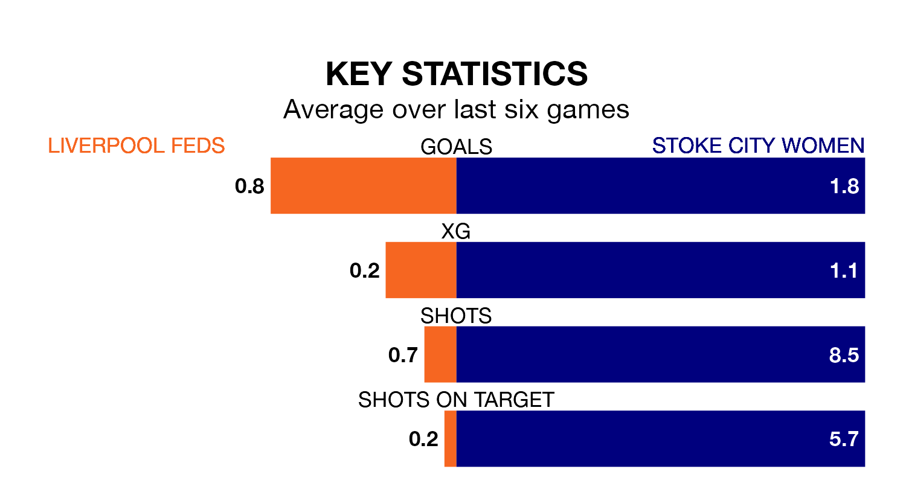

Liverpool Feds face Stoke City Women on late Thursday looking to secure a first win in six Women's National League Premier Division – North games.
Liverpool Feds have lost one and drawn four matches since they last earned three points – against Huddersfield Town Women on November 5.
They face a Stoke City side who have won two and drawn one over that time.
With 21 goals in 15 games so far this season, Liverpool Feds are scoring at below the league average rate with 1.4 goals per game. And they are conceding more than average, letting in 27 goals at a rate of 1.8 per game.
Stoke City, meanwhile, are above average scorers, with 2.0 goals per game, compared to a league average of 1.7. They have also conceded 2.0 goals per game.
In the last three years, Liverpool Feds and Stoke City have played each other on three occasions. Liverpool Feds won one of them and Stoke City the other.
Their last meeting was on September 6, when Liverpool Feds won 5-3 away.
The home team are sixth in the table after 15 games, of which they have won four and drawn six, earning 18 points.
The visitors are one place behind Liverpool Feds in seventh, with five wins and two draws putting them on 17 points.
Liverpool Feds's last match was on Sunday, a 0-0 draw against Nottingham Forest Women.
Stoke City beat Stourbridge Women 4-1 last time out, on February 11.
Updated: 12:18 (UTC), 19/02/24